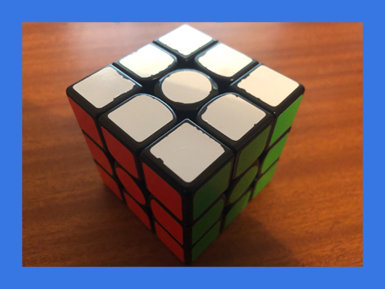
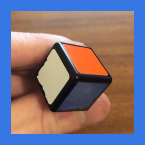
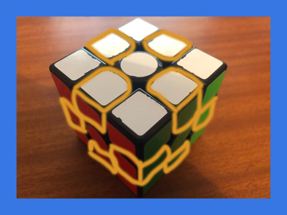
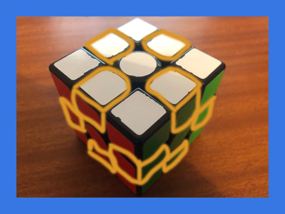
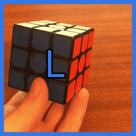

beginner method
how the cube works

this is a rubik's cube, a very famous and popular toy. also very frustrating, due to it's difficulty, as i'm sure you are aware.
you see here how the cube is solved? you can do this too!
you see here how the cube is solved? you can do this too!


the cube has 8 corner pieces. they each have 3 stickers on them. corner pieces MUST stay in the corners, it is phsyically impossible for a corner piece to move to an edge or centre, and there is only 1 of each corner piece. remember, you are solving pieces, NOT stickers.
 

the cube has 12 edge pieces, each with 2 stickers on them. likewise with corners, edges cannot move from the edge, and there is only 1 of each edge piece. there are not 2 Green/Red edges, only 1.

lastly, the centres. the centres REPRESENT THE COLOUR OF THE FACE. if the centre sticker is blue, it is the blue face, regardless of the other stickers on that face. the centres are locked in place, and will never change position. you can't swap the blue and red centres, but you can rotate a group of 4 centres by turning a middle face.
types of moves
this is the R layer. it is the right face of the cube.
note, the orientation of the cube does not matter.. whichever side is on the right is the R face.
this is the U layer. it is the up face of the cube.

this is the L layer. it is the left face of the cube.
this is the D layer. it is the down face of the cube.
this is the F layer. it is the front face of the cube.
this is the B layer. it is the back face of the cube.
each of these faces can be manipulated in different ways. if you turn that face clockwise, you designate that letter by itself.
R U R U means you would turn the RIGHT face clockwise, the UP face clockwise, the RIGHT face clockwise again, and the UP face clockwise again.
if you turn the face counter-clockwise, you designate that letter with a ' symbol (known as a prime here)
R U R' U' means you turn the RIGHT face clockwise, the UP face clockwise, the RIGHT face counter-clockwise, and then the UP face counter-clockwise.
if you turn the face twice, or 180°, you assign a 2 to that letter.
R U' D2 U R' means you would turn the R face clockwise, the U face counter-clockwise, the DOWN face twice, the U face clockwise, and the R face counter-clockwise.